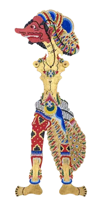
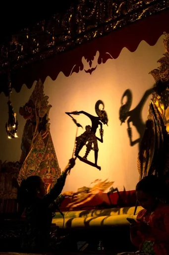
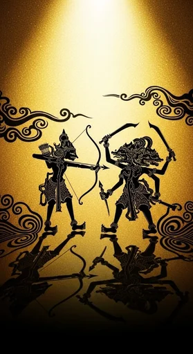
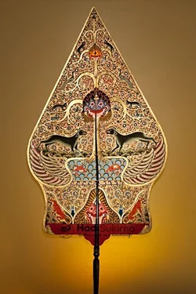
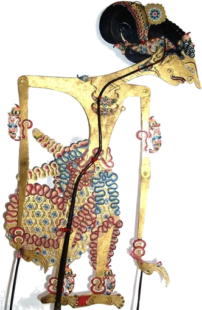
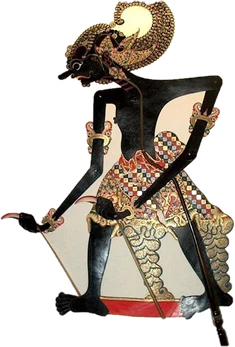
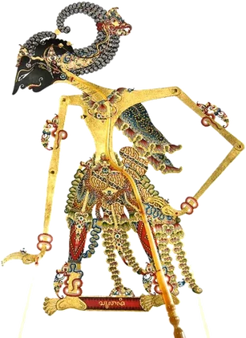
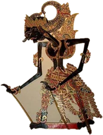
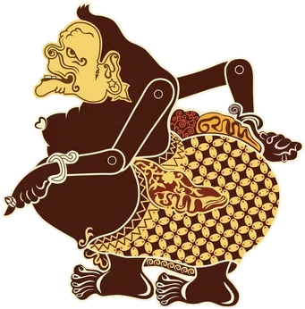
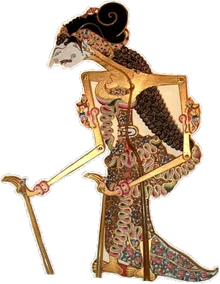

Panggung virtual interaktif berkinerja tinggi. Melacak anatomi sendi tangan secara real-time via kamera untuk mengendalikan cempurit gapit dan tuding wayang dalam tata kelir WebGL2.

Tradisi seni pertunjukan bayangan yang memadukan sastra, seni rupa kriya kulit, dan filsafat kebajikan.

Pagelaran wayang kulit adalah sinergi magis antara sang dalang, nayaga (penabuh gamelan), pesinden, dan temaram api blencong. Jarak wayang terhadap kelir menciptakan gradasi bayang-bayang tajam hingga lembut yang merefleksikan dinamika kehidupan manusia.
Badan PBB UNESCO mengukuhkan Wayang Kulit Indonesia sebagai Masterpiece of the Oral and Intangible Heritage of Humanity. Seni ini telah mengakar kuat lebih dari sepuluh abad, terdokumentasi sejak Prasasti Balitung (907 M) di lembah peradaban Mataram Kuno.

Kisah agung Sri Rama melawan Rahwana serta Baratayuda diadaptasi dengan kearifan Nusantara, mengajarkan bahwa kebenaran nurani senantiasa mengalahkan hawa nafsu duniawi.
Transformasi bentuk wayang menjadi stilasi berlekuk proporsional dengan sambungan engsel kuningan (*tuding*) diciptakan oleh Sunan Kalijaga sebagai media pendidikan budi pekerti luhur dan dakwah kultural yang damai.
Panggung kelir bukan sekadar media pertunjukan, melainkan representasi makrokosmos dan cermin batiniah manusia.
Kain putih bentangan panggung melambangkan alam semesta tempat segala peristiwa hidup dan takdir manusia berproses.
Lentera minyak kuno penghasil cahaya melambangkan matahari dan suluh ilahi yang memberikan nyawa serta bayangan.
Pemberi napas dan penggerak watak karakter yang menyuarakan etika, kebijaksanaan moral, serta keselarasan kosmis.
Refleksi watak manusia yang senantiasa bergulat antara dorongan nafsu dan panggilan budi pekerti luhur.

Gunungan menandai pembukaan babak (*tancep kayon*), pergantian suasana alam, hingga penutupan lakon. Di sisi depan terukir Rumah Adat, Dua Raksasa Cingkarabala-Balaupata penjaga gerbang sorga, serta Pohon Hayat dengan aneka satwa. Di sisi belakang terlukis kobaran api merah membara dan Batara Kala yang mengingatkan keterbatasan usia manusia.
Setiap figur wayang mencerminkan watak moral, kekuatan batin, dan kepribadian luhur manusia.

Simbol ketulusan dan kebenaran mutlak. Raja berdarah putih yang menolak dusta, mengutamakan kesabaran, dan memegang teguh tali darma keadilan sejati.

Ksatria gagah perkasa berkuku Pancanaka. Lambang kejujuran tanpa kompromi, keteguhan prinsip pantang mundur, dan keberanian menegakkan kebenaran.

Pemanah ulung berjiwa ksatria luhur. Representasi ketajaman konsentrasi batiniah (*cipta hening*), kehalusan budi pekerti, dan disiplin kesaktian.

Ksatria Pringgandani yang mampu terbang tanpa sayap. Lambang loyalitas pengorbanan tertinggi demi melindungi kedaulatan tanah air dan bangsanya.

Manifestasi Batara Ismaya yang merakyat. Representasi kearifan lokal, kerendahan hati, kejujuran batiniah, dan penuntun moral para ksatria.

Prajurit wanita legendaris berjiwa merdeka dan pemanah tangguh. Tokoh panutan emansipasi nusantara yang membela kehormatan dan keadilan sejati.
Antarmuka melacak koordinat tangan Anda secara instan tanpa perlu alat pengendali tambahan.
Posisi telapak tangan menggerakkan cempurit badan utama wayang. Geser tangan secara bebas untuk memposisikan karakter di layar.
Dua jari ini mengendalikan tangkai lengan kiri dan kanan wayang. Buka, tekuk, atau silangkan jari untuk menciptakan gerakan artikulasi lentur.
Miringkan pergelangan tangan Anda ke kiri atau kanan agar wayang condong membungkuk memberi salam atau bersiap dalam adegan sabetan.
Dekatkan tangan ke arah kamera untuk mengangkat wayang mendekat ke lampu blencong. Bayangannya membesar dan memudar lembut secara optik.
Acungkan hanya jari kelingking Anda dengan jari lain mengepal. Karakter wayang seketika menampilkan koreografi tari klasik Kiprahan mengikuti wirama gamelan.
Dukungan penuh untuk memainkan dua wayang sekaligus dengan dua tangan, satu wayang mandiri, ataupun melalui drag kursor mouse / layar sentuh.
Dibangun dengan standar web modern tanpa ketergantungan server untuk menjamin privasi kamera Anda.
Deteksi 21 titik koordinat anatomi tangan pada 60 FPS menggunakan GPU delegate lokal di dalam peramban tanpa transmisi data keluar.
Shader pencahayaan multi-pass yang merekonstruksi tekstur tatahan kulit sapi bertatah, normal map relief, dan fluktuasi nyala api blencong.
Penyelarasan fisika gerak dan ketukan gending gamelan menggunakan timecode pre-computed beat analysis berakurasi milidetik.
Penyesuaian skala hierarkis otomatis untuk iPhone, iPad, Android, MacBook, dan PC desktop tanpa distorsi aspek rasio.
Nikmati pengalaman pagelaran wayang kulit virtual langsung di layar Anda. Sepenuhnya gratis dan ramah privasi.
Wayang Kulit Digital
Mainkan wayang kulit di atas kelir berlampu minyak blencong. Kamera melacak tangan Anda layaknya seorang dalang.
D dance FG turn H hide UI C recalibrate V camera P pop out M music